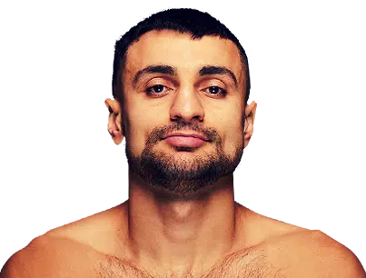

Dinsdag, 31 December 2024
TSUTSUMI
TKO 8VS
ALVARADO
TKO 812 RONDEN @ SUPER VEERGEWICHT
OTA-CITY GENERAL GYMNASIUM, TOKIO, JAPAN
Wie won Tsutsumi vs Alvarado?
Hayato Tsutsumi versloeg Rene Alvarado op dinsdag 31 december 2024 in het Ota-City General Gymnasium, Tokio.
De scorekaarten werden aangekondigd ten gunste van de winnaar, Hayato Tsutsumi.
Het gevecht was gepland voor 12 ronden in de Super Veergewicht divisie, wat betekent dat de gewichtslimiet 130 pond (9,3 steen of 59 kg) was.
Tsutsumi vs Alvarado Statistieken
Hayato Tsutsumi stapte de ring in met een ongeslagen record van 5 overwinningen, 0 verliezen en 0 gelijke spelen.
Rene Alvarado kwam de ring binnen met een record van 34 overwinningen, 14 verliezen en 0 gelijke spelen.
Hayato Tsutsumi was 10 jaar jonger dan Alvarado, hij was 25 jaar oud.
Beide vechters gebruikten de orthodoxe houding.
Tsutsumi was de minder ervaren professionele vechter, met 43 gevechten minder en debuteerde in 2022, 14 jaar en 2 maanden later dan Alvarado, wiens eerste professionele gevecht in 2008 plaatsvond. Hij had 277 minder professionele rondes gevochten, 42 tegenover Alvarado's 319.
Hayato Tsutsumi was in het gevecht de nummer 9 van de WBA in de Super Veergewicht divisie.
Rene Alvarado was de nummer 14 van de WBA in de 130lb divisie.
Zondag, 29 December 2024

AVANESYAN
TKO 1VS
SRIMUEANG
TKO 16 RONDEN @ WELTERGEWICHT
PHUKET, THAILAND
Wie won Avanesyan vs Srimueang?
David Avanesyan versloeg Sadudee Srimueang door technische knockout in de 1ste ronde op zondag 29 december 2024 in Phuket.
Het gevecht was gepland voor 6 ronden in de Weltergewicht divisie, wat betekent dat de gewichtslimiet 147 pond (10.5 steen of 66.7 kg) was.
Avanesyan vs Srimueang Statistieken
David Avanesyan stapte de ring in met een record van 30 overwinningen, 5 verliezen en 1 gelijkspel, waarvan 18 overwinningen door knockout.
Sadudee Srimueang kwam de ring binnen met een record van 11 overwinningen, 3 verliezen en 0 gelijkspelen, waarvan 6 overwinningen door knockout.
De statistieken gaven aan dat Avanesyan een licht voordeel had in kracht, met een knockout percentage van 60%, vergeleken met Srimueang's 55%.
David Avanesyan was 5 jaar ouder dan Srimueang, hij was 36 jaar oud.
Srimueang had een lengtevoordeel van 2 inch (ongeveer 5 cm) ten opzichte van Avanesyan.
David Avanesyan vocht uit de orthodoxe houding, terwijl Sadudee Srimueang een zuidelijke houding gebruikte.
Avanesyan was de meer ervaren professionele vechter, met 22 gevechten meer, en debuteerde in 2009, 6 jaar en 4 maanden eerder dan Srimueang, wiens eerste professionele gevecht in 2015 plaatsvond. Hij had 154 meer professionele rondes gevochten, in totaal 220 tegenover Srimueang's 66.
David Avanesyan ging het gevecht in als de nummer 12 van de WBC in de Weltergewicht divisie.